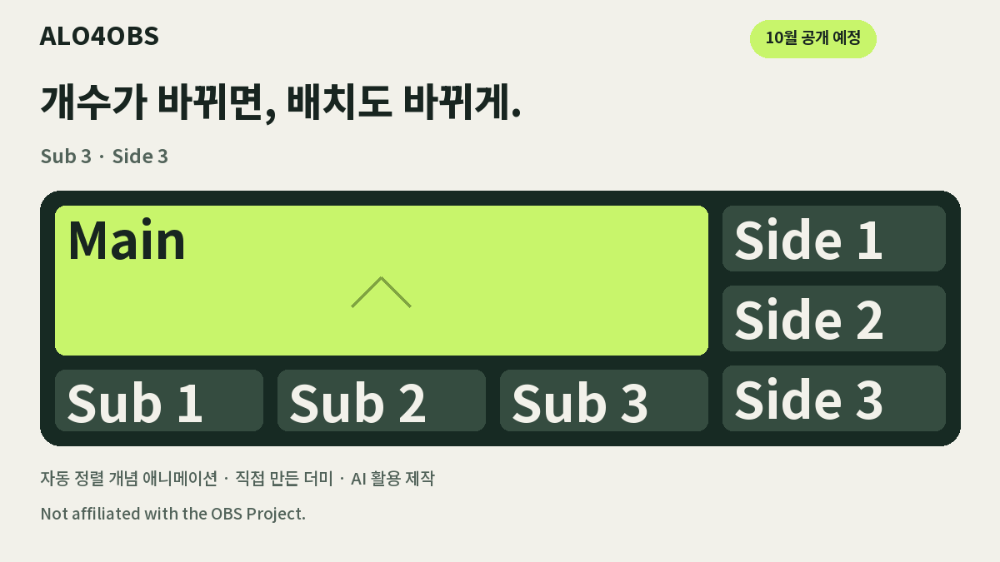
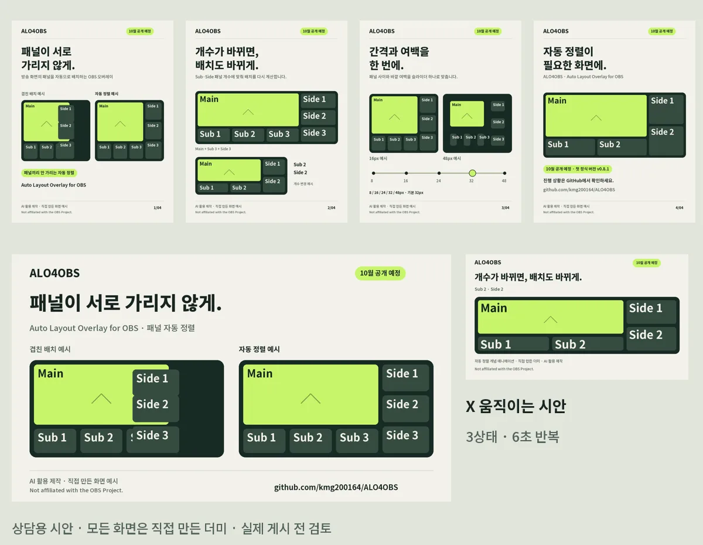

ALO4OBS
방송 패널 자동 배치 오버레이Auto-layout overlay for OBS
패널 최대 7개를 어떻게 켜고 꺼도 서로 가리지 않게 자동으로 배치하는 OBS 오버레이입니다. 기획·화면 설계·구현 명세·테스트·문서·배포를 혼자 맡았고, 코드는 제가 쓴 명세를 바탕으로 AI 코딩 도구가 작성했습니다.An OBS overlay that keeps up to seven panels from overlapping, however they're toggled. I owned planning, screen design, specs, testing, docs, and release; AI coding tools wrote the code from my numbered specs.
- 패널 켜짐·꺼짐 조합 128가지를 실제 브라우저에서 모두 확인All 128 on/off panel combinations checked in a real browser
- v0.8.0 기준 Node 테스트 189/189, Python 11/11 통과v0.8.0: Node tests 189/189, Python 11/11 passing
- 프로게이머 스트리머 피드백을 v0.7.1에 반영, 실제 라이브 방송에서 사용Feedback from a pro-gamer streamer shipped in v0.7.1; used on real live streams
- 설계 판단: 간격·여백을 슬라이더 하나로 합침("대부분의 스트리머는 디자이너가 아니다"), "패널 1~7"을 Main·Sub·Side로 바꿈Design calls: merged gap and margin into one slider ("most streamers aren't designers"); renamed "Panel 1–7" to Main, Sub, Side